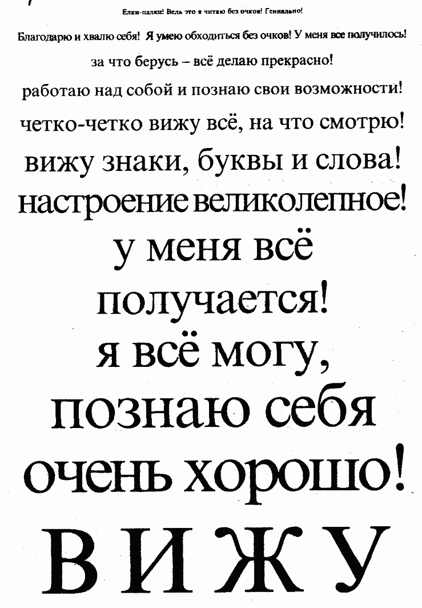

Чтобы не перегрузить свой нежный зрительный аппарат и не добиться обратного эффекта. В нашей практике были случаи, когда люди, добившись заметного результата, начинали «рвать с места в карьер», многократно усиливая нагрузку и увеличивая время тренировки. Каково же было их удивление и разочарование, когда в один прекрасный день их зрение упало до прежней отметки, и им пришлось начинать все сначала, только на сей раз аккуратно и спокойно.
Итак, запоминаем: занимаемся по 1 разу в день сериями по три дня. После каждых трех дней делаем 1 день перерыва. В этот день делаем медитативные упражнения, а все остальные — только на мысленном уровне. Это касается и упражнений для спины тоже.
Для того чтобы понять, как идет процесс восстановления зрения, вам понадобится таблица. Мы предлагаем взять любую таблицу для проверки зрения, либо воспользоваться той, которую мы приводим ниже.
Как пользоваться таблицей? Распечатайте ее на странице А4. После этого возьмите таблицу в руку, поместите перед глазами и полностью разогните руку. Зафиксируйте в тетради или в блокноте ту строчку, на которой у вас возникает дискомфорт (можно прямо в таблице поставить точку или маленькую галочку возле выбранной строчки). От этой строчки и до невидимого вами конца таблицы — ваша рабочая зона. Каждый раз после выполнения комплекса упражнений для глаз, проверяйте, не расширилась ли ваша зона комфортного видения. Вы можете также заниматься с таблицей, отводя ее в разные стороны на вытянутой руке и стараясь через частые моргания прочитать ее содержимое. Каждый день фиксируйте результаты в тетради или блокноте.
Также мы рекомендуем записать ваши вес, объемы и рост, и каждую неделю делать замеры. Вы увидите, что в процессе освоения комплекса для спины и для глаз, вы станете немного выше (некоторые наши пациенты «подросли» на 4-5 см — и это в 50 и более лет!), стройнее и легче. Увеличение роста происходит за счет восстановления хрящевой ткани позвоночника, образования мощного мышечного корсета и нормализации расположения позвонков. Это — приятные «внешние» бонусы. Будут также приятные изменения и в плане здоровья, которые тоже можно фиксировать в тетради.
Внимание! На первых порах освоения комплекса могут быть небольшие и недолгие ухудшения самочувствия — это из вас уходят ваши застарелые «застойные» болезни. Эти ухудшения никогда не длятся более 3 дней и не влекут за собой особого дискомфорта.
Чтобы как можно надежнее закрепить результаты, каждый вечер перед сном выполняйте медитативное дыхание через глаза с утверждением, что вы видите хорошо, привыкаете видеть еще лучше, и что ваше зрение — стопроцентно!
И еще: как только освоите комплекс, постарайтесь больше не надевать очки (только в случае крайней необходимости). Регулярное ношение очков в разы замедлит достижение вами результатов. Очки зрение не исправляют, а портят — помните об этом! Постарайтесь не сводить на «нет» все ваши усилия, потакая «привычкам очкарика».